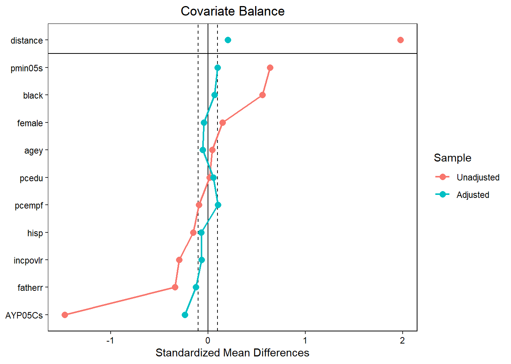
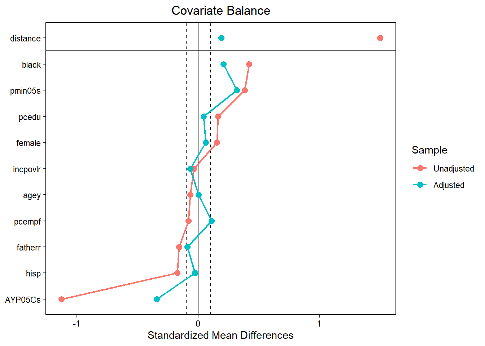
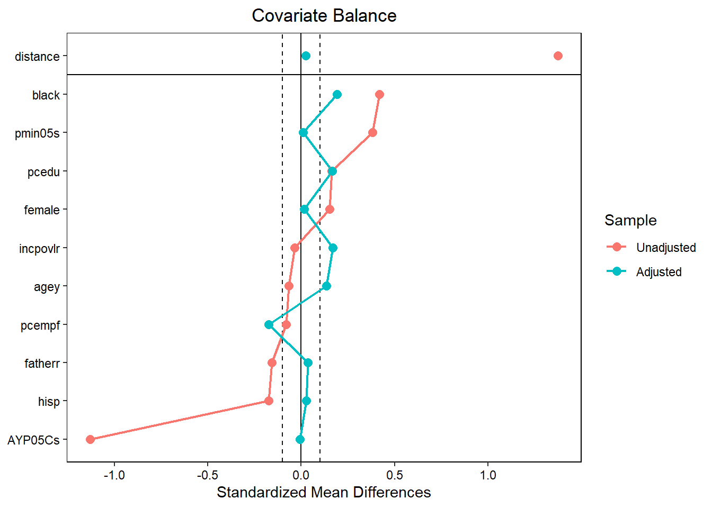

7 Section 5.8.5 Multilevel Propensity Score (PS)
library(tidyverse)
library(haven)
library(broom)
library(MatchIt)
library(cobalt)
library(plm)
library(lme4)
library(lmerTest)
library(sjlabelled)
library(performance)
options(scipen=999)7.1 cccpros57
7.1.1 Import Data
# Remove formats and labels, because matchit requires a vector for the distance option
df <- haven::read_dta("data/Data_Chapter5/cccpros57.dta") %>%
zap_formats()
df <- sjlabelled::remove_all_labels(df) %>%
as_tibble()
post1 <- haven::read_dta("data/Data_Chapter5/post1.dta")
post2 <- haven::read_dta("data/Data_Chapter5/post2.dta")7.1.2 Obtain Single-Level p-score
m1 <- glm("intschb ~ agey + female + black + hisp + pcedu + incpovlr + pcempf +
fatherr + AYP05Cs + pmin05s", family = binomial, data = df)
m1.sum <- summary(m1)
exp(m1.sum$coefficients[,1])## (Intercept) agey female
## 38966508817.1685028076 0.8431486659 1.1826521220
## black hisp pcedu
## 2.4594809316 0.6102697550 1.1493126863
## incpovlr pcempf fatherr
## 0.9990353470 0.6577613322 0.8748319518
## AYP05Cs pmin05s
## 0.7456891068 0.0004952084exp(confint(m1))## Waiting for profiling to be done...## 2.5 % 97.5 %
## (Intercept) 115570492.22183506191 20081560925616.000000000
## agey 0.51414641226 1.378521524
## female 0.74483328390 1.879544965
## black 1.36262822614 4.486695708
## hisp 0.20603826654 1.745844136
## pcedu 0.99791178543 1.327304722
## incpovlr 0.99638797325 1.001688708
## pcempf 0.40135946992 1.070435734
## fatherr 0.45541386742 1.688725534
## AYP05Cs 0.70816246819 0.782024951
## pmin05s 0.00005024149 0.004414004ps_sgl <- predict(m1, type = "response") # equivalent to df$ps_sgl7.1.3 Obtain School-Level p-score Model
# Keep the first row/observation for each schbl value
df.school <- df %>%
arrange(schbl) %>%
group_by(schbl) %>%
slice(1)
m2 <- glm("intschb ~ AYP05Cs + pmin05s", family = binomial, data = df.school)
m2.sum <- summary(m2)
exp(m2.sum$coefficients[,1])## (Intercept) AYP05Cs pmin05s
## 207606.86381660 0.85518059 0.02207066exp(confint(m2))## Waiting for profiling to be done...## 2.5 % 97.5 %
## (Intercept) 0.00185810346135 5674025413970693.000000
## AYP05Cs 0.64764761513951 1.048226
## pmin05s 0.00000007544837 2563.2233747.1.4 Before-Matching Balance Check
t.test(agey ~ intschb, data = df, var.equal = TRUE)##
## Two Sample t-test
##
## data: agey by intschb
## t = -0.53426, df = 552, p-value = 0.5934
## alternative hypothesis: true difference in means between group 0 and group 1 is not equal to 0
## 95 percent confidence interval:
## -0.10549027 0.06037623
## sample estimates:
## mean in group 0 mean in group 1
## 7.896591 7.919148chisq.test(df$female, df$intschb, correct = FALSE)##
## Pearson's Chi-squared test
##
## data: df$female and df$intschb
## X-squared = 3.0238, df = 1, p-value = 0.08205chisq.test(df$black, df$intschb, correct = FALSE)##
## Pearson's Chi-squared test
##
## data: df$black and df$intschb
## X-squared = 40.379, df = 1, p-value = 0.0000000002092chisq.test(df$hisp, df$intschb, correct = FALSE)##
## Pearson's Chi-squared test
##
## data: df$hisp and df$intschb
## X-squared = 3.0572, df = 1, p-value = 0.08038t.test(pcedu ~ intschb, data = df, var.equal = TRUE)##
## Two Sample t-test
##
## data: pcedu by intschb
## t = -0.21644, df = 552, p-value = 0.8287
## alternative hypothesis: true difference in means between group 0 and group 1 is not equal to 0
## 95 percent confidence interval:
## -0.3750634 0.3006107
## sample estimates:
## mean in group 0 mean in group 1
## 5.424028 5.461255t.test(incpovlr ~ intschb, data = df, var.equal = TRUE)##
## Two Sample t-test
##
## data: incpovlr by intschb
## t = 3.4934, df = 552, p-value = 0.0005152
## alternative hypothesis: true difference in means between group 0 and group 1 is not equal to 0
## 95 percent confidence interval:
## 14.38040 51.32562
## sample estimates:
## mean in group 0 mean in group 1
## 192.2183 159.3653chisq.test(df$pcempf, df$intschb, correct = FALSE)##
## Pearson's Chi-squared test
##
## data: df$pcempf and df$intschb
## X-squared = 1.1468, df = 1, p-value = 0.2842chisq.test(df$fatherr, df$intschb, correct = FALSE)##
## Pearson's Chi-squared test
##
## data: df$fatherr and df$intschb
## X-squared = 15.557, df = 1, p-value = 0.00008005t.test(AYP05Cs ~ intschb, data = df, var.equal = TRUE)##
## Two Sample t-test
##
## data: AYP05Cs by intschb
## t = 17.354, df = 552, p-value < 0.00000000000000022
## alternative hypothesis: true difference in means between group 0 and group 1 is not equal to 0
## 95 percent confidence interval:
## 10.19661 12.79958
## sample estimates:
## mean in group 0 mean in group 1
## 72.25972 60.76162t.test(pmin05s ~ intschb, data = df, var.equal = TRUE)##
## Two Sample t-test
##
## data: pmin05s by intschb
## t = -7.5318, df = 552, p-value = 0.0000000000002057
## alternative hypothesis: true difference in means between group 0 and group 1 is not equal to 0
## 95 percent confidence interval:
## -0.14393616 -0.08438928
## sample estimates:
## mean in group 0 mean in group 1
## 0.4747435 0.5889062# Alternative balance check using matchit
scheme1.before <- MatchIt::matchit(intschb ~ agey + female + black + hisp +
pcedu + incpovlr + pcempf + fatherr + AYP05Cs + pmin05s,
data = df,
method = NULL)
summary(scheme1.before)##
## Call:
## MatchIt::matchit(formula = intschb ~ agey + female + black +
## hisp + pcedu + incpovlr + pcempf + fatherr + AYP05Cs + pmin05s,
## data = df, method = NULL)
##
## Summary of Balance for All Data:
## Means Treated Means Control Std. Mean Diff. Var. Ratio eCDF Mean
## distance 0.7340 0.2547 2.0364 0.8873 0.3968
## agey 7.9191 7.8966 0.0457 0.9721 0.0198
## female 0.5720 0.4982 0.1490 . 0.0737
## black 0.4280 0.1802 0.5009 . 0.2478
## hisp 0.0701 0.1131 -0.1683 . 0.0430
## pcedu 5.4613 5.4240 0.0190 0.8764 0.0151
## incpovlr 159.3653 192.2183 -0.3032 0.9228 0.0817
## pcempf 0.5129 0.5583 -0.0908 . 0.0454
## fatherr 0.7048 0.8445 -0.3063 . 0.1397
## AYP05Cs 60.7616 72.2597 -1.2531 2.1957 0.3322
## pmin05s 0.5889 0.4747 0.5017 4.0809 0.1774
## eCDF Max
## distance 0.6784
## agey 0.0807
## female 0.0737
## black 0.2478
## hisp 0.0430
## pcedu 0.0356
## incpovlr 0.1365
## pcempf 0.0454
## fatherr 0.1397
## AYP05Cs 0.7951
## pmin05s 0.3471
##
##
## Sample Sizes:
## Control Treated
## All 283 271
## Matched 283 271
## Unmatched 0 0
## Discarded 0 07.1.5 Matching with ps_sgl
Note that the caliper argument in matchit() is “the number of standard deviations of the distance measure within which to draw control units (default = 0, no caliper matching). If a caliper is specified, a control unit within the caliper for a treated unit is randomly selected as the match for that treated unit.”2
# Generate a column of x random numbers, sort x in ascending order, calculate caliper with ps_sgl
set.seed(1000)
df.scheme1 <- df %>%
add_column(x = runif(nrow(.))) %>%
arrange(x)
# Scheme 1 - Nearest Neighbor with ps_sgl
set.seed(1000)
scheme1 <- MatchIt::matchit(intschb ~ agey + female + black + hisp + pcedu + incpovlr +
pcempf + fatherr + AYP05Cs + pmin05s,
data = df.scheme1,
method = "nearest",
distance = df.scheme1$ps_sgl,
caliper = .25, # equivalent to sd(df.scheme1$ps_sgl)*.25
std.caliper = T, # caliper in standard deviation units
m.order = "largest", # descending order of distance measures
replace = FALSE)
sd(df.scheme1$ps_sgl)*.25 == scheme1$caliper # check caliper##
## TRUEscheme1.data <- MatchIt::match.data(scheme1)
# Balance Check
cobalt::love.plot(scheme1,
binary = "std",
stats = c("mean.diffs"),
threshold = c(.1),
var.order = "unadjusted",
line = TRUE,
s.d.denom = "pooled"
)
7.1.6 Matching with ps_sch
# Generate a column of x random numbers, sort x in ascending order, calculate caliper with ps_sch
set.seed(1000)
df.scheme2 <- df %>%
add_column(x = runif(nrow(.))) %>%
arrange(x)
# Scheme 2 - Nearest Neighbor with ps_sch
set.seed(1000)
scheme2 <- MatchIt::matchit(intschb ~ agey + female + black + hisp + pcedu + incpovlr +
pcempf + fatherr + AYP05Cs + pmin05s,
data = df.scheme2,
method = "nearest",
distance = df.scheme2$ps_sch,
caliper = .25, # equivalent to sd(df.scheme2$ps_sch)*.25
m.order = "largest", # descending order of distance measures
replace = FALSE)
scheme2.data <- MatchIt::match.data(scheme2)
# Balance Check
cobalt::love.plot(scheme2,
binary = "std",
stats = c("mean.diffs"),
threshold = c(.1),
var.order = "unadjusted",
line = TRUE,
s.d.denom = "pooled"
)7.1.7 Check ICC
# Function to calculate Stata's "rho" (ICC) in xtreg
get_icc <- function(lmer_obj, group) {
sigma_u2 <- as.numeric(attr(VarCorr(lmer_obj)[[group]], "stddev"))^2
sigma_e2 <- summary(lmer_obj)$sigma^2
return(sigma_u2/(sigma_u2+sigma_e2))
}
# Original dataset
m3 <- lmer(cccpros57 ~ (1|schbl), data = df, REML = F)
get_icc(m3, "schbl")## [1] 0.1850556# Scheme 1: ICC using school as a clustering variable
m4 <- lmer(cccpros57 ~ (1|schbl), data = post1, REML = F)
get_icc(m4, "schbl")## [1] 0.1827006# Scheme 1: ICC using the matched set as a clustering variable (create mset first)
m5 <- lmer(cccpros57 ~ (1|mset), data = post1, REML = F)
get_icc(m5, "mset")## [1] 0.07452924# Scheme 2: ICC using school as a clustering variable
m6 <- lmer(cccpros57 ~ (1|schbl), data = post2, REML = F)
get_icc(m6, "schbl")## [1] 0.1930747# Scheme 2: ICC using the matched set as a clustering variable (create mset first)
m7 <- lmer(cccpros57 ~ (1|mset), data = post2, REML = F)## boundary (singular) fit: see help('isSingular')get_icc(m7, "mset")## [1] 07.1.8 Outcome Analsis: Multilevel
out1 <- lmer(cccpros57 ~ intschb + agey + female + black + hisp + pcedu +
incpovlr + pcempf + fatherr + AYP05Cs + pmin05s + (1|schbl),
data = df,
REML = FALSE)
summary(out1)## Linear mixed model fit by maximum likelihood . t-tests use Satterthwaite's
## method [lmerModLmerTest]
## Formula: cccpros57 ~ intschb + agey + female + black + hisp + pcedu +
## incpovlr + pcempf + fatherr + AYP05Cs + pmin05s + (1 | schbl)
## Data: df
##
## AIC BIC logLik deviance df.resid
## 1132.1 1192.6 -552.1 1104.1 540
##
## Scaled residuals:
## Min 1Q Median 3Q Max
## -4.1169 -0.6230 -0.0446 0.6716 4.5429
##
## Random effects:
## Groups Name Variance Std.Dev.
## schbl (Intercept) 0.03177 0.1782
## Residual 0.41621 0.6451
## Number of obs: 554, groups: schbl, 12
##
## Fixed effects:
## Estimate Std. Error df t value Pr(>|t|)
## (Intercept) 0.6912222 1.1150068 17.2991369 0.620 0.5434
## intschb 0.2313252 0.1417319 11.5995931 1.632 0.1295
## agey -0.0329893 0.0582583 547.8266420 -0.566 0.5714
## female 0.0116071 0.0556196 543.1304500 0.209 0.8348
## black -0.1068533 0.0751899 551.0960379 -1.421 0.1558
## hisp 0.1116060 0.1108651 551.5320199 1.007 0.3145
## pcedu -0.0294279 0.0168356 547.7983137 -1.748 0.0810 .
## incpovlr 0.0001694 0.0003295 547.6612236 0.514 0.6074
## pcempf -0.0085714 0.0587865 548.5975537 -0.146 0.8841
## fatherr 0.0274703 0.0761396 546.0925033 0.361 0.7184
## AYP05Cs 0.0031425 0.0109294 11.2024750 0.288 0.7790
## pmin05s -1.0415518 0.5423622 9.7450652 -1.920 0.0845 .
## ---
## Signif. codes: 0 '***' 0.001 '**' 0.01 '*' 0.05 '.' 0.1 ' ' 1
##
## Correlation of Fixed Effects:
## (Intr) intsch agey female black hisp pcedu incpvl pcempf fathrr
## intschb -0.428
## agey -0.451 -0.003
## female -0.047 -0.014 0.040
## black 0.039 -0.075 0.002 0.041
## hisp 0.004 0.011 -0.017 0.009 0.232
## pcedu -0.077 -0.035 0.119 -0.048 -0.067 0.207
## incpovlr -0.049 0.014 0.113 0.034 0.207 0.207 -0.373
## pcempf -0.012 0.041 -0.061 0.052 -0.127 -0.111 -0.116 -0.225
## fatherr -0.058 -0.007 0.063 0.030 0.222 -0.118 -0.047 -0.230 0.037
## AYP05Cs -0.882 0.481 0.022 0.007 -0.056 -0.020 -0.028 -0.019 0.034 -0.022
## pmin05s -0.784 0.229 0.021 -0.005 -0.139 -0.068 -0.034 0.013 0.025 0.019
## AYP05C
## intschb
## agey
## female
## black
## hisp
## pcedu
## incpovlr
## pcempf
## fatherr
## AYP05Cs
## pmin05s 0.784out2 <- lmer(cccpros57 ~ intschb + agey + female + black + hisp + pcedu +
incpovlr + pcempf + fatherr + AYP05Cs + pmin05s + (1|schbl),
data = post1,
REML = FALSE)
summary(out2)## Linear mixed model fit by maximum likelihood . t-tests use Satterthwaite's
## method [lmerModLmerTest]
## Formula: cccpros57 ~ intschb + agey + female + black + hisp + pcedu +
## incpovlr + pcempf + fatherr + AYP05Cs + pmin05s + (1 | schbl)
## Data: post1
##
## AIC BIC logLik deviance df.resid
## 399.2 445.2 -185.6 371.2 184
##
## Scaled residuals:
## Min 1Q Median 3Q Max
## -3.4114 -0.6032 -0.0443 0.6692 2.9257
##
## Random effects:
## Groups Name Variance Std.Dev.
## schbl (Intercept) 0.02531 0.1591
## Residual 0.36656 0.6054
## Number of obs: 198, groups: schbl, 10
##
## Fixed effects:
## Estimate Std. Error df t value Pr(>|t|)
## (Intercept) 1.0198112 1.5786272 16.3303382 0.646 0.527
## intschb 0.2513471 0.1440230 6.9879211 1.745 0.125
## agey -0.0595067 0.1066836 193.7636716 -0.558 0.578
## female 0.1039814 0.0917062 192.4232631 1.134 0.258
## black 0.0591394 0.1112419 197.9966270 0.532 0.596
## hisp 0.0407093 0.2259732 188.6752480 0.180 0.857
## pcedu -0.0262788 0.0282298 194.0906852 -0.931 0.353
## incpovlr -0.0001293 0.0005047 188.0448990 -0.256 0.798
## pcempf 0.0314214 0.0957509 196.6787517 0.328 0.743
## fatherr 0.0413359 0.1207982 192.5515736 0.342 0.733
## AYP05Cs 0.0016732 0.0143406 8.3323211 0.117 0.910
## pmin05s -1.3511808 0.8470734 12.0151531 -1.595 0.137
##
## Correlation of Fixed Effects:
## (Intr) intsch agey female black hisp pcedu incpvl pcempf fathrr
## intschb -0.208
## agey -0.529 -0.006
## female -0.014 0.013 0.014
## black 0.105 -0.005 -0.045 0.208
## hisp 0.006 0.027 -0.062 0.039 0.181
## pcedu -0.037 -0.011 0.115 -0.132 -0.018 0.024
## incpovlr -0.003 0.017 0.010 0.133 0.256 0.104 -0.340
## pcempf -0.042 -0.040 -0.034 0.080 -0.105 -0.064 -0.116 -0.284
## fatherr -0.095 0.001 0.019 0.107 0.174 -0.030 -0.075 -0.293 0.124
## AYP05Cs -0.821 0.223 -0.012 -0.022 -0.126 0.017 -0.112 -0.025 0.074 0.035
## pmin05s -0.766 0.125 -0.014 -0.081 -0.230 -0.006 -0.105 0.008 0.024 0.076
## AYP05C
## intschb
## agey
## female
## black
## hisp
## pcedu
## incpovlr
## pcempf
## fatherr
## AYP05Cs
## pmin05s 0.852out3 <- lmer(cccpros57 ~ intschb + agey + female + black + hisp + pcedu +
incpovlr + pcempf + fatherr + AYP05Cs + pmin05s + (1|schbl),
data = post2,
REML = FALSE)
summary(out3)## Linear mixed model fit by maximum likelihood . t-tests use Satterthwaite's
## method [lmerModLmerTest]
## Formula: cccpros57 ~ intschb + agey + female + black + hisp + pcedu +
## incpovlr + pcempf + fatherr + AYP05Cs + pmin05s + (1 | schbl)
## Data: post2
##
## AIC BIC logLik deviance df.resid
## 412.7 458.9 -192.4 384.7 186
##
## Scaled residuals:
## Min 1Q Median 3Q Max
## -3.07060 -0.65843 -0.08637 0.64639 2.82804
##
## Random effects:
## Groups Name Variance Std.Dev.
## schbl (Intercept) 0.007886 0.0888
## Residual 0.394913 0.6284
## Number of obs: 200, groups: schbl, 6
##
## Fixed effects:
## Estimate Std. Error df t value Pr(>|t|)
## (Intercept) -1.2416479 1.6329395 9.1879217 -0.760 0.466
## intschb 0.2275477 0.1204337 4.2859290 1.889 0.127
## agey 0.0593026 0.1013635 199.8174428 0.585 0.559
## female 0.0021723 0.0913075 199.8217452 0.024 0.981
## black -0.0583104 0.1119639 199.3489521 -0.521 0.603
## hisp 0.0997444 0.2225810 199.1519185 0.448 0.655
## pcedu -0.0290466 0.0298435 193.6725616 -0.973 0.332
## incpovlr -0.0001440 0.0005401 197.1817950 -0.267 0.790
## pcempf -0.0056656 0.0968596 196.0481669 -0.058 0.953
## fatherr 0.2021954 0.1271594 199.8855228 1.590 0.113
## AYP05Cs 0.0167172 0.0143067 4.8553601 1.168 0.297
## pmin05s -0.6566093 0.9255222 4.5321180 -0.709 0.513
##
## Correlation of Fixed Effects:
## (Intr) intsch agey female black hisp pcedu incpvl pcempf fathrr
## intschb 0.006
## agey -0.592 -0.039
## female 0.023 0.035 0.010
## black 0.086 -0.116 -0.014 0.113
## hisp -0.020 0.002 0.009 0.017 0.176
## pcedu 0.106 -0.068 0.004 -0.100 -0.014 -0.052
## incpovlr -0.098 -0.038 0.110 0.132 0.199 0.176 -0.447
## pcempf -0.054 0.155 -0.017 0.033 -0.104 -0.014 -0.146 -0.220
## fatherr -0.088 0.043 0.109 0.029 0.176 -0.079 0.005 -0.347 0.114
## AYP05Cs -0.848 -0.020 0.114 -0.076 -0.120 0.018 -0.206 0.058 0.057 -0.030
## pmin05s -0.789 -0.032 0.087 -0.060 -0.178 -0.023 -0.199 0.050 0.059 0.020
## AYP05C
## intschb
## agey
## female
## black
## hisp
## pcedu
## incpovlr
## pcempf
## fatherr
## AYP05Cs
## pmin05s 0.852# Note that lmer() does not use the EM algorithm in Stata's xtmixed, but the results are similar
out4 <- lmer(cccpros57 ~ intschb + agey + female + black + hisp + pcedu +
incpovlr + pcempf + fatherr + AYP05Cs + pmin05s + (1|schbl) + (1|mset),
data = post1,
REML = FALSE,
control=lmerControl(optCtrl=list(maxfun=30000)))
summary(out4)## Linear mixed model fit by maximum likelihood . t-tests use Satterthwaite's
## method [lmerModLmerTest]
## Formula: cccpros57 ~ intschb + agey + female + black + hisp + pcedu +
## incpovlr + pcempf + fatherr + AYP05Cs + pmin05s + (1 | schbl) +
## (1 | mset)
## Data: post1
## Control: lmerControl(optCtrl = list(maxfun = 30000))
##
## AIC BIC logLik deviance df.resid
## 398.6 447.9 -184.3 368.6 183
##
## Scaled residuals:
## Min 1Q Median 3Q Max
## -3.1782 -0.5565 -0.0578 0.5494 2.8696
##
## Random effects:
## Groups Name Variance Std.Dev.
## mset (Intercept) 0.06665 0.2582
## schbl (Intercept) 0.03020 0.1738
## Residual 0.29910 0.5469
## Number of obs: 198, groups: mset, 99; schbl, 10
##
## Fixed effects:
## Estimate Std. Error df t value Pr(>|t|)
## (Intercept) 0.86819778 1.64132442 18.32532978 0.529 0.603
## intschb 0.25627509 0.14769119 7.32366768 1.735 0.124
## agey -0.02372054 0.10482779 184.99539019 -0.226 0.821
## female 0.13113839 0.09090378 190.20413511 1.443 0.151
## black 0.07539073 0.11345707 184.67749689 0.664 0.507
## hisp 0.09772452 0.22307047 185.75288181 0.438 0.662
## pcedu -0.01984058 0.02816233 194.40353852 -0.705 0.482
## incpovlr -0.00026858 0.00050134 188.22356200 -0.536 0.593
## pcempf 0.04281962 0.09514526 196.31075831 0.450 0.653
## fatherr 0.07114051 0.11820569 180.87910907 0.602 0.548
## AYP05Cs -0.00007682 0.01531744 10.27769908 -0.005 0.996
## pmin05s -1.51762130 0.87986778 13.99895548 -1.725 0.107
##
## Correlation of Fixed Effects:
## (Intr) intsch agey female black hisp pcedu incpvl pcempf fathrr
## intschb -0.217
## agey -0.503 -0.006
## female -0.024 0.012 0.036
## black 0.091 -0.002 -0.035 0.201
## hisp -0.007 0.022 -0.050 0.036 0.203
## pcedu -0.024 -0.010 0.106 -0.110 0.012 0.028
## incpovlr -0.027 0.018 0.035 0.129 0.244 0.110 -0.364
## pcempf -0.035 -0.040 -0.032 0.081 -0.137 -0.065 -0.120 -0.254
## fatherr -0.085 -0.002 0.018 0.120 0.147 -0.043 -0.087 -0.292 0.119
## AYP05Cs -0.840 0.233 -0.009 -0.025 -0.114 0.025 -0.111 -0.009 0.063 0.031
## pmin05s -0.780 0.125 -0.013 -0.078 -0.211 -0.004 -0.111 0.025 0.016 0.068
## AYP05C
## intschb
## agey
## female
## black
## hisp
## pcedu
## incpovlr
## pcempf
## fatherr
## AYP05Cs
## pmin05s 0.8507.2 cccragg24
7.2.1 Import Data
ra <- haven::read_dta("data/Data_Chapter5/cccragg24.dta") %>%
zap_formats()
ra <- sjlabelled::remove_all_labels(ra) %>%
as_tibble()
post3 <- haven::read_dta("data/Data_Chapter5/post3.dta")
post4 <- haven::read_dta("data/Data_Chapter5/post4.dta")7.2.2 Obtain Single-Level p-score
ra_glm <- glm("intschb ~ agey + female + black + hisp + pcedu + incpovlr + pcempf +
fatherr + AYP05Cs + pmin05s", family = binomial, data = ra)
ra_glm_sum <- summary(ra_glm)
exp(ra_glm_sum$coefficients[,1])## (Intercept) agey female black
## 63047622.532016911 0.838656988 1.232935406 2.349062618
## hisp pcedu incpovlr pcempf
## 0.960575635 1.110584039 1.001039226 0.658712488
## fatherr AYP05Cs pmin05s
## 1.289773619 0.807745966 0.001351376ra_ps_sgl <- predict(ra_glm, type = "response")7.2.3 Obtain School-Level p-score Model
# Keep the first row/observation for each schbl value
ra_school <- ra %>%
arrange(schbl) %>%
group_by(schbl) %>%
slice(1)
ra_glm2 <- glm("intschb ~ AYP05Cs + pmin05s", family = binomial, data = ra_school)
ra_glm2_sum <- summary(ra_glm2)
exp(ra_glm_sum$coefficients[,1])## (Intercept) agey female black
## 63047622.532016911 0.838656988 1.232935406 2.349062618
## hisp pcedu incpovlr pcempf
## 0.960575635 1.110584039 1.001039226 0.658712488
## fatherr AYP05Cs pmin05s
## 1.289773619 0.807745966 0.0013513767.2.4 Before-Matching Balance Check
t.test(agey ~ intschb, data = ra, var.equal = TRUE)##
## Two Sample t-test
##
## data: agey by intschb
## t = 0.79153, df = 585, p-value = 0.429
## alternative hypothesis: true difference in means between group 0 and group 1 is not equal to 0
## 95 percent confidence interval:
## -0.04743792 0.11148723
## sample estimates:
## mean in group 0 mean in group 1
## 7.904738 7.872713chisq.test(ra$female, ra$intschb, correct = FALSE)##
## Pearson's Chi-squared test
##
## data: ra$female and ra$intschb
## X-squared = 3.4349, df = 1, p-value = 0.06383chisq.test(ra$black, ra$intschb, correct = FALSE)##
## Pearson's Chi-squared test
##
## data: ra$black and ra$intschb
## X-squared = 24.638, df = 1, p-value = 0.0000006917chisq.test(ra$hisp, ra$intschb, correct = FALSE)##
## Pearson's Chi-squared test
##
## data: ra$hisp and ra$intschb
## X-squared = 4.443, df = 1, p-value = 0.03505t.test(pcedu ~ intschb, data = ra, var.equal = TRUE)##
## Two Sample t-test
##
## data: pcedu by intschb
## t = -1.9926, df = 585, p-value = 0.04677
## alternative hypothesis: true difference in means between group 0 and group 1 is not equal to 0
## 95 percent confidence interval:
## -0.647443176 -0.004681272
## sample estimates:
## mean in group 0 mean in group 1
## 5.270548 5.596610t.test(incpovlr ~ intschb, data = ra, var.equal = TRUE)##
## Two Sample t-test
##
## data: incpovlr by intschb
## t = 0.42796, df = 585, p-value = 0.6688
## alternative hypothesis: true difference in means between group 0 and group 1 is not equal to 0
## 95 percent confidence interval:
## -13.79001 21.47404
## sample estimates:
## mean in group 0 mean in group 1
## 172.2237 168.3817chisq.test(ra$pcempf, ra$intschb, correct = FALSE)##
## Pearson's Chi-squared test
##
## data: ra$pcempf and ra$intschb
## X-squared = 0.93015, df = 1, p-value = 0.3348chisq.test(ra$fatherr, ra$intschb, correct = FALSE)##
## Pearson's Chi-squared test
##
## data: ra$fatherr and ra$intschb
## X-squared = 3.6137, df = 1, p-value = 0.05731t.test(AYP05Cs ~ intschb, data = ra, var.equal = TRUE)##
## Two Sample t-test
##
## data: AYP05Cs by intschb
## t = 13.66, df = 585, p-value < 0.00000000000000022
## alternative hypothesis: true difference in means between group 0 and group 1 is not equal to 0
## 95 percent confidence interval:
## 8.272252 11.050358
## sample estimates:
## mean in group 0 mean in group 1
## 70.86164 61.20034t.test(pmin05s ~ intschb, data = ra, var.equal = TRUE)##
## Two Sample t-test
##
## data: pmin05s by intschb
## t = -4.6302, df = 585, p-value = 0.000004504
## alternative hypothesis: true difference in means between group 0 and group 1 is not equal to 0
## 95 percent confidence interval:
## -0.09255402 -0.03742139
## sample estimates:
## mean in group 0 mean in group 1
## 0.5016288 0.56661657.2.5 Matching with ps_sgl
# Scheme 1 - Nearest Neighbor with ps_sgl
set.seed(1000)
ra_scheme1 <- MatchIt::matchit(intschb ~ agey + female + black + hisp + pcedu +
incpovlr +pcempf + fatherr + AYP05Cs + pmin05s,
data = ra,
method = "nearest",
distance = ra$ps_sgl,
caliper = .25,
replace = FALSE)## Warning: Fewer control units than treated units; not all treated units will get
## a match.ra_scheme1_data <- MatchIt::match.data(ra_scheme1)
# Balance Check
cobalt::love.plot(ra_scheme1,
binary = "std",
stats = c("mean.diffs"),
threshold = c(.1),
var.order = "unadjusted",
line = TRUE,
s.d.denom = "pooled"
)
7.2.6 Matching with ps_sch
# Scheme 2 - Nearest Neighbor with ps_sch
set.seed(1000)
ra_scheme2 <- MatchIt::matchit(intschb ~ agey + female + black + hisp + pcedu + incpovlr +
pcempf + fatherr + AYP05Cs + pmin05s,
data = ra,
method = "nearest",
distance = ra$ps_sch,
caliper = .25,
replace = FALSE)## Warning: Fewer control units than treated units; not all treated units will get
## a match.ra_scheme2_data <- MatchIt::match.data(ra_scheme2)
# Balance Check
cobalt::love.plot(ra_scheme2,
binary = "std",
stats = c("mean.diffs"),
threshold = c(.1),
var.order = "unadjusted",
line = TRUE,
s.d.denom = "pooled"
)
7.2.7 Check ICC
i1 <- lmer(cccragg24 ~ (1|schbl), data = ra, REML = F)
get_icc(i1, "schbl")## [1] 0.07795007i2 <- lmer(cccragg24 ~ (1|schbl), data = post3, REML = F)
get_icc(i2, "schbl")## [1] 0.05052852i3 <- lmer(cccragg24 ~ (1|mset), data = post3, REML = F)## boundary (singular) fit: see help('isSingular')get_icc(i3, "mset")## [1] 0i4 <- lmer(cccragg24 ~ (1|schbl), data = post4, REML = F)
get_icc(i4, "schbl")## [1] 0.05130242i5 <- lmer(cccragg24 ~ (1|mset), data = post4, REML = F)
get_icc(i5, "mset")## [1] 0.19155637.2.8 Outcome Analsis: Multilevel
ra_out1 <- lmer(cccragg24 ~ intschb + agey + female + black + hisp + pcedu +
incpovlr + pcempf + fatherr + AYP05Cs + pmin05s + (1|schbl),
data = ra,
REML = FALSE)
summary(ra_out1)## Linear mixed model fit by maximum likelihood . t-tests use Satterthwaite's
## method [lmerModLmerTest]
## Formula: cccragg24 ~ intschb + agey + female + black + hisp + pcedu +
## incpovlr + pcempf + fatherr + AYP05Cs + pmin05s + (1 | schbl)
## Data: ra
##
## AIC BIC logLik deviance df.resid
## 1126.8 1188.0 -549.4 1098.8 573
##
## Scaled residuals:
## Min 1Q Median 3Q Max
## -3.8820 -0.5803 0.0780 0.5367 3.3552
##
## Random effects:
## Groups Name Variance Std.Dev.
## schbl (Intercept) 0.02068 0.1438
## Residual 0.37063 0.6088
## Number of obs: 587, groups: schbl, 12
##
## Fixed effects:
## Estimate Std. Error df t value Pr(>|t|)
## (Intercept) 0.44505943 0.92667699 20.80649307 0.480 0.636
## intschb -0.19656648 0.11357659 12.48761677 -1.731 0.108
## agey 0.07941009 0.05382555 582.22221593 1.475 0.141
## female 0.03161287 0.05082602 576.34561568 0.622 0.534
## black -0.01901878 0.06731344 585.73246960 -0.283 0.778
## hisp 0.08005447 0.10498239 584.71862879 0.763 0.446
## pcedu 0.01859684 0.01556726 582.82205863 1.195 0.233
## incpovlr -0.00002751 0.00030395 583.45375442 -0.090 0.928
## pcempf -0.01315617 0.05343864 584.32266097 -0.246 0.806
## fatherr 0.00938409 0.06573253 582.51785428 0.143 0.887
## AYP05Cs -0.01264483 0.00876189 11.84124707 -1.443 0.175
## pmin05s -0.74186729 0.45384409 11.98884397 -1.635 0.128
##
## Correlation of Fixed Effects:
## (Intr) intsch agey female black hisp pcedu incpvl pcempf fathrr
## intschb -0.401
## agey -0.496 0.010
## female -0.050 -0.027 0.042
## black 0.020 -0.070 0.003 0.018
## hisp 0.019 -0.009 -0.025 0.015 0.234
## pcedu -0.112 -0.032 0.121 -0.063 -0.009 0.204
## incpovlr -0.035 -0.023 0.106 0.051 0.191 0.218 -0.367
## pcempf -0.004 0.045 -0.051 0.016 -0.154 -0.087 -0.102 -0.193
## fatherr -0.034 -0.027 0.049 0.028 0.200 -0.151 -0.054 -0.231 -0.037
## AYP05Cs -0.856 0.455 0.020 0.005 -0.031 -0.033 -0.003 -0.037 0.025 -0.039
## pmin05s -0.767 0.231 0.023 0.003 -0.148 -0.083 -0.015 -0.002 0.015 0.006
## AYP05C
## intschb
## agey
## female
## black
## hisp
## pcedu
## incpovlr
## pcempf
## fatherr
## AYP05Cs
## pmin05s 0.783ra_out2 <- lmer(cccragg24 ~ intschb + agey + female + black + hisp + pcedu +
incpovlr + pcempf + fatherr + AYP05Cs + pmin05s + (1|schbl),
data = post3,
REML = FALSE)
summary(ra_out2)## Linear mixed model fit by maximum likelihood . t-tests use Satterthwaite's
## method [lmerModLmerTest]
## Formula: cccragg24 ~ intschb + agey + female + black + hisp + pcedu +
## incpovlr + pcempf + fatherr + AYP05Cs + pmin05s + (1 | schbl)
## Data: post3
##
## AIC BIC logLik deviance df.resid
## 531.1 580.8 -251.5 503.1 244
##
## Scaled residuals:
## Min 1Q Median 3Q Max
## -3.7352 -0.5681 0.0571 0.5068 3.0213
##
## Random effects:
## Groups Name Variance Std.Dev.
## schbl (Intercept) 0.01501 0.1225
## Residual 0.40105 0.6333
## Number of obs: 258, groups: schbl, 12
##
## Fixed effects:
## Estimate Std. Error df t value Pr(>|t|)
## (Intercept) 0.00355236 1.22511662 30.59643738 0.003 0.9977
## intschb -0.12316154 0.11591401 9.60776615 -1.063 0.3140
## agey 0.16194551 0.09043449 255.90423248 1.791 0.0745 .
## female -0.03125581 0.08099518 251.69678848 -0.386 0.6999
## black -0.06630285 0.09716807 257.80775401 -0.682 0.4956
## hisp -0.05398092 0.22522493 254.67539409 -0.240 0.8108
## pcedu 0.00321377 0.02638440 256.13958504 0.122 0.9031
## incpovlr -0.00004034 0.00049467 253.79053324 -0.082 0.9351
## pcempf -0.03234786 0.08712100 257.89077137 -0.371 0.7107
## fatherr 0.07079410 0.10683566 257.96375589 0.663 0.5081
## AYP05Cs -0.01572501 0.01049485 12.62583098 -1.498 0.1586
## pmin05s -0.54183591 0.59338036 18.67049306 -0.913 0.3728
## ---
## Signif. codes: 0 '***' 0.001 '**' 0.01 '*' 0.05 '.' 0.1 ' ' 1
##
## Correlation of Fixed Effects:
## (Intr) intsch agey female black hisp pcedu incpvl pcempf fathrr
## intschb -0.160
## agey -0.615 -0.003
## female -0.052 -0.027 0.040
## black 0.007 -0.006 0.017 0.116
## hisp 0.027 0.022 -0.091 0.022 0.209
## pcedu -0.116 -0.011 0.112 -0.036 0.013 0.019
## incpovlr -0.003 0.012 0.088 0.082 0.222 0.140 -0.412
## pcempf 0.022 -0.023 -0.117 0.091 -0.142 -0.011 -0.102 -0.232
## fatherr -0.010 -0.009 -0.041 0.012 0.088 -0.102 0.016 -0.331 -0.049
## AYP05Cs -0.780 0.188 0.029 -0.017 -0.041 0.023 -0.051 -0.075 0.074 -0.038
## pmin05s -0.719 0.050 0.021 -0.028 -0.181 -0.030 -0.051 -0.032 0.007 0.046
## AYP05C
## intschb
## agey
## female
## black
## hisp
## pcedu
## incpovlr
## pcempf
## fatherr
## AYP05Cs
## pmin05s 0.826ra_out3 <- lmer(cccragg24 ~ intschb + agey + female + black + hisp + pcedu +
incpovlr + pcempf + fatherr + AYP05Cs + pmin05s + (1|schbl),
data = post4,
REML = FALSE)
summary(ra_out3)## Linear mixed model fit by maximum likelihood . t-tests use Satterthwaite's
## method [lmerModLmerTest]
## Formula: cccragg24 ~ intschb + agey + female + black + hisp + pcedu +
## incpovlr + pcempf + fatherr + AYP05Cs + pmin05s + (1 | schbl)
## Data: post4
##
## AIC BIC logLik deviance df.resid
## 511.1 560.6 -241.5 483.1 240
##
## Scaled residuals:
## Min 1Q Median 3Q Max
## -3.6880 -0.5859 0.0529 0.4843 3.2563
##
## Random effects:
## Groups Name Variance Std.Dev.
## schbl (Intercept) 0.00128 0.03577
## Residual 0.39096 0.62527
## Number of obs: 254, groups: schbl, 7
##
## Fixed effects:
## Estimate Std. Error df t value Pr(>|t|)
## (Intercept) 1.09709583 1.19341507 13.34615431 0.919 0.3743
## intschb -0.10696919 0.08524443 6.33137228 -1.255 0.2539
## agey 0.02529304 0.09186204 253.36723409 0.275 0.7833
## female 0.13416143 0.07965086 250.29881755 1.684 0.0934 .
## black 0.05193543 0.09994578 251.59262147 0.520 0.6038
## hisp -0.03404747 0.21252278 249.85982494 -0.160 0.8728
## pcedu 0.01362782 0.02547170 253.96608169 0.535 0.5931
## incpovlr -0.00003668 0.00047039 253.22022061 -0.078 0.9379
## pcempf 0.02919453 0.08242162 252.61959792 0.354 0.7235
## fatherr 0.10313539 0.10286490 253.68799736 1.003 0.3170
## AYP05Cs -0.02139554 0.00958739 5.05899405 -2.232 0.0754 .
## pmin05s -0.37482131 0.65921741 5.54584079 -0.569 0.5919
## ---
## Signif. codes: 0 '***' 0.001 '**' 0.01 '*' 0.05 '.' 0.1 ' ' 1
##
## Correlation of Fixed Effects:
## (Intr) intsch agey female black hisp pcedu incpvl pcempf fathrr
## intschb -0.045
## agey -0.644 -0.019
## female -0.086 -0.018 0.078
## black 0.069 -0.161 -0.011 0.066
## hisp -0.005 -0.045 -0.028 -0.056 0.166
## pcedu 0.003 -0.108 0.039 -0.074 0.091 0.100
## incpovlr -0.055 -0.067 0.116 0.072 0.153 0.167 -0.382
## pcempf -0.042 0.080 -0.071 0.036 -0.077 0.030 -0.054 -0.203
## fatherr -0.068 -0.015 0.063 0.020 0.192 -0.131 -0.018 -0.302 0.012
## AYP05Cs -0.763 0.051 0.035 0.005 -0.104 0.007 -0.128 -0.044 0.100 -0.040
## pmin05s -0.710 0.057 0.016 0.005 -0.230 -0.023 -0.174 0.016 0.049 0.032
## AYP05C
## intschb
## agey
## female
## black
## hisp
## pcedu
## incpovlr
## pcempf
## fatherr
## AYP05Cs
## pmin05s 0.849# Note that lmer() does not use the EM algorithm in Stata's xtmixed
ra_out4 <- lmer(cccragg24 ~ intschb + agey + female + black + hisp + pcedu +
incpovlr + pcempf + fatherr + AYP05Cs + pmin05s + (1|schbl) + (1|mset),
data = post4,
REML = FALSE,
control=lmerControl(optCtrl=list(maxfun=30000)))
summary(ra_out4)## Linear mixed model fit by maximum likelihood . t-tests use Satterthwaite's
## method [lmerModLmerTest]
## Formula: cccragg24 ~ intschb + agey + female + black + hisp + pcedu +
## incpovlr + pcempf + fatherr + AYP05Cs + pmin05s + (1 | schbl) +
## (1 | mset)
## Data: post4
## Control: lmerControl(optCtrl = list(maxfun = 30000))
##
## AIC BIC logLik deviance df.resid
## 509.6 562.6 -239.8 479.6 239
##
## Scaled residuals:
## Min 1Q Median 3Q Max
## -3.3653 -0.5190 0.0556 0.5112 2.9183
##
## Random effects:
## Groups Name Variance Std.Dev.
## mset (Intercept) 0.067181 0.25919
## schbl (Intercept) 0.004645 0.06815
## Residual 0.321605 0.56710
## Number of obs: 254, groups: mset, 127; schbl, 7
##
## Fixed effects:
## Estimate Std. Error df t value Pr(>|t|)
## (Intercept) 1.07899536 1.28793876 13.49164645 0.838 0.4168
## intschb -0.11506523 0.09065629 6.28988597 -1.269 0.2493
## agey 0.03082777 0.09012865 240.42202105 0.342 0.7326
## female 0.11357833 0.07927570 249.91017822 1.433 0.1532
## black 0.04595566 0.09844551 243.50055839 0.467 0.6411
## hisp -0.03270908 0.20792136 234.74041010 -0.157 0.8751
## pcedu 0.01614542 0.02511835 246.43805625 0.643 0.5210
## incpovlr -0.00003758 0.00046317 244.59325663 -0.081 0.9354
## pcempf 0.01030922 0.08082582 239.84989857 0.128 0.8986
## fatherr 0.11643540 0.10074056 238.92767246 1.156 0.2489
## AYP05Cs -0.02171177 0.01113103 6.78125609 -1.951 0.0934 .
## pmin05s -0.37363177 0.72844547 6.31305169 -0.513 0.6255
## ---
## Signif. codes: 0 '***' 0.001 '**' 0.01 '*' 0.05 '.' 0.1 ' ' 1
##
## Correlation of Fixed Effects:
## (Intr) intsch agey female black hisp pcedu incpvl pcempf fathrr
## intschb -0.068
## agey -0.582 -0.022
## female -0.074 -0.012 0.074
## black 0.069 -0.150 -0.008 0.044
## hisp -0.014 -0.041 -0.012 -0.060 0.160
## pcedu 0.000 -0.105 0.046 -0.082 0.092 0.110
## incpovlr -0.046 -0.060 0.124 0.083 0.154 0.165 -0.379
## pcempf -0.047 0.076 -0.068 0.036 -0.097 0.021 -0.055 -0.220
## fatherr -0.064 -0.018 0.075 0.010 0.194 -0.116 -0.018 -0.297 -0.001
## AYP05Cs -0.806 0.076 0.023 0.002 -0.096 0.002 -0.107 -0.048 0.096 -0.039
## pmin05s -0.750 0.076 0.009 0.005 -0.213 -0.020 -0.157 0.003 0.054 0.023
## AYP05C
## intschb
## agey
## female
## black
## hisp
## pcedu
## incpovlr
## pcempf
## fatherr
## AYP05Cs
## pmin05s 0.851